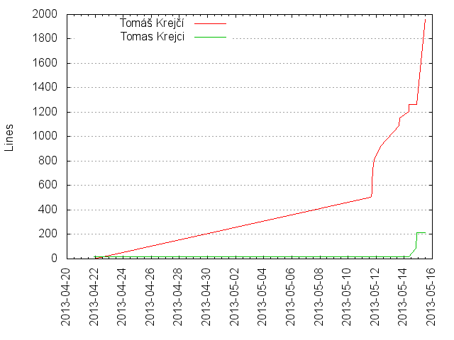
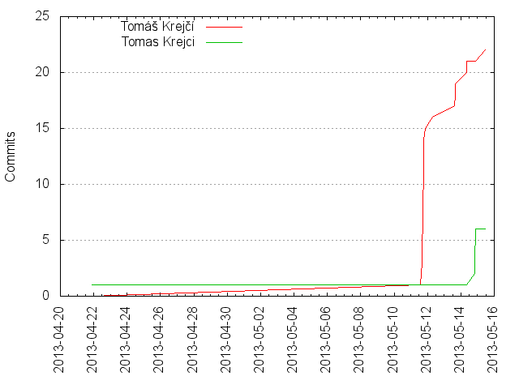

Authors
| Author | Commits (%) | + lines | - lines | First commit | Last commit | Age | Active days | # by commits |
|---|
| Tomáš Krejčí | 22 (78.57%) | 1959 | 917 | 2013-05-11 | 2013-05-15 | 3 days, 21:10:17 | 5 | 1 |
| Tomas Krejci | 6 (21.43%) | 216 | 94 | 2013-04-21 | 2013-05-14 | 23 days, 0:06:52 | 2 | 2 |


| Month | Author | Commits (%) | Next top 5 | Number of authors |
|---|
| 2013-05 | Tomáš Krejčí | 22 (81.48% of 27) | Tomas Krejci | 2 |
| 2013-04 | Tomas Krejci | 1 (100.00% of 1) | | 1 |
| Year | Author | Commits (%) | Next top 5 | Number of authors |
|---|
| 2013 | Tomáš Krejčí | 22 (78.57% of 28) | Tomas Krejci | 2 |
| Domains | Total (%) |
|---|
| gmail.com | 23 (82.14%) |
|---|
| Tomass-iMac.local | 5 (17.86%) |
|---|